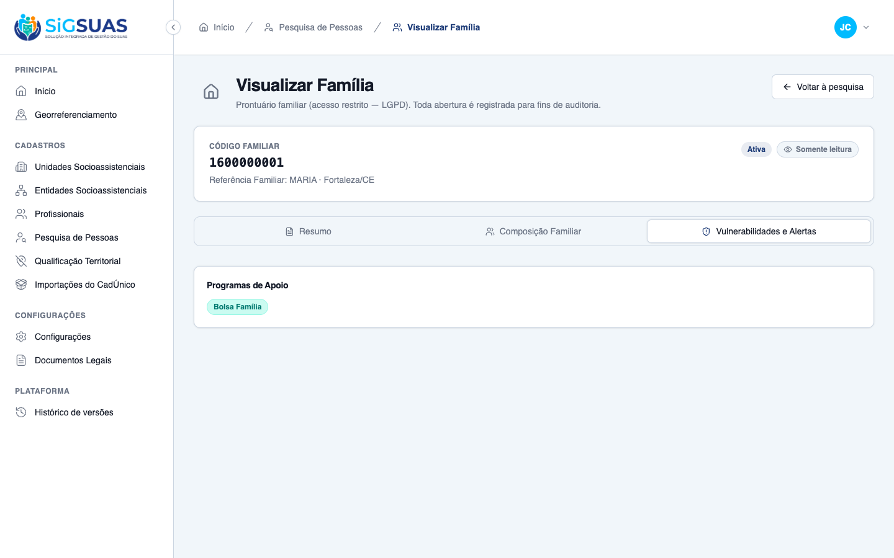
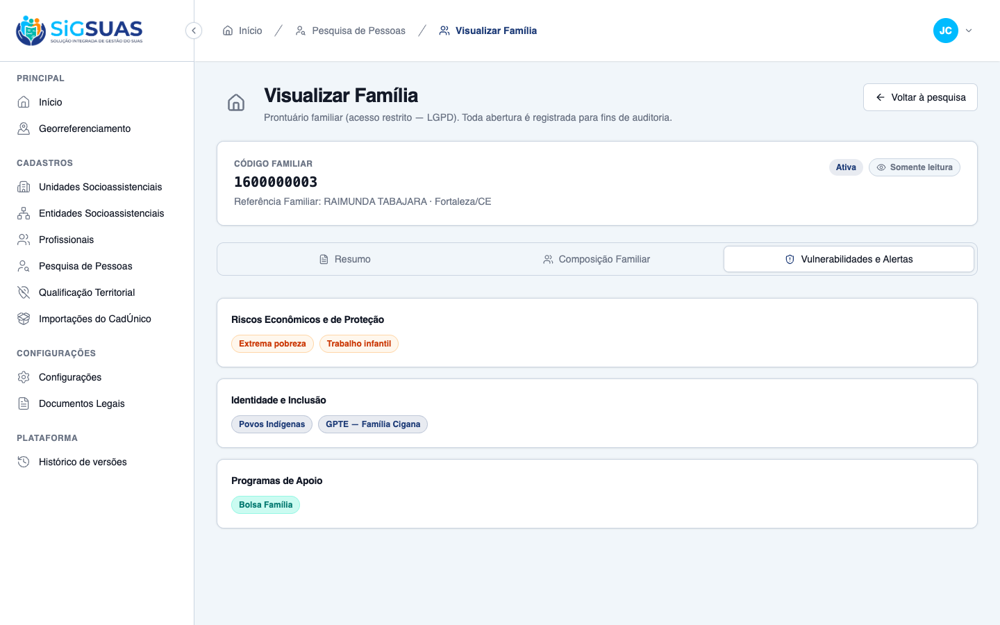
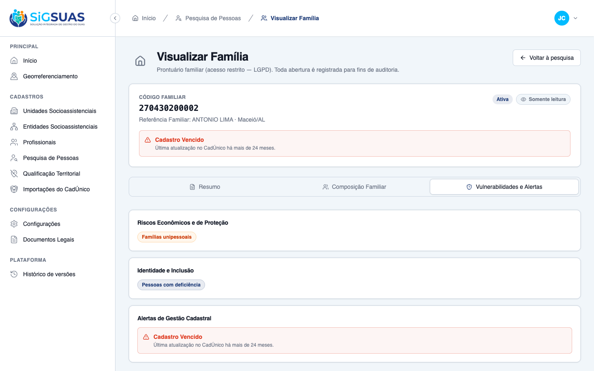

2 Critérios de Aceite (CA05, CA06) verificados como PARCIAL (◑): evidência de UI ao vivo (navegador) somada à cobertura automatizada de backend. A aba Vulnerabilidades e Alertas exibe APENAS os marcadores ATIVOS da família, agrupados em Riscos Econômicos, Identidade e Programas — omitindo por inteiro os grupos sem marcação (CA05) — e destaca o alerta de gestão cadastral "Cadastro Vencido" quando a família está com 24+ meses de defasagem (CA06). Os códigos ativos e a janela do alerta são calculados no backend (FamilyVulnerabilityService — MESMA fonte do Painel Geo). Suítes automatizadas: Vitest 10/10 (VulnerabilidadesTab) e Pest 28/28 (FamilyVulnerabilityService + FamilyDetailsTest, inclui as janelas de 24/19 meses). Resultado geral: ATENDIDO.
| CA | Critério | Status |
|---|---|---|
| CA05 | Exibição do painel de riscos e tags (apenas as vulnerabilidades ativas, omitindo as não marcadas) | ATENDIDO · navegador + automatizado |
| CA06 | Alerta cronológico de defasagem (Cadastro Vencido em 24+ meses de atraso) | ATENDIDO · navegador + automatizado |
Critério (Gherkin): Dado que acesso a aba "Vulnerabilidades e Alertas", Quando a tela renderiza os dados da família, Então o sistema apresenta em blocos de destaque apenas as vulnerabilidades que aquela família possui (Ex: exibe as tags [Extrema Pobreza] e [Trabalho Infantil], mas omite as demais caso não possuam marcação na base).
Como foi testado: 1) Login como coordenador (Master) → organização PMM. 2) Abrir a rota da HU: /app/cadastros/familias/9fb588c6-…?tab=vulnerabilidades — família com um único marcador. 3) Abrir uma família com múltiplos marcadores (05443abe-…) para evidenciar o exemplo do critério (Extrema Pobreza + Trabalho Infantil) e a omissão das não marcadas.


Critério (Gherkin): Dado que a data da última atualização da família no arquivo importado aponta um intervalo de 24 meses de atraso, Quando abro a aba de vulnerabilidades, Então o sistema exibe de forma destacada o alerta de gestão: [Cadastro Vencido].
Como foi testado: Abrir uma família com defasagem cadastral ≥ 24 meses (b23a5497-…) na aba Vulnerabilidades e Alertas. O código expired é calculado no backend (FamilyVulnerabilityService: >24 meses → expired · 19–24 → expiring).

PASS Tests\Unit\Services\Family\FamilyVulnerabilityServiceTest ✓ it activates extreme_poverty at the configured threshold, inclusive… 0.38s ✓ it activates single_person with exactly one ACTIVE member, ignoring… 0.04s ✓ it activates receives_pbf on the family flag 0.03s ✓ it activates member flags (child_labor, homeless_situation, has_dis… 0.12s ✓ it activates indigenous_quilombola as an OR between the two family… 0.05s ✓ it activates gpte when the family is linked to a REAL traditional p… 0.03s ✓ it never activates gpte for the "Nenhuma" sentinel group (code 0),… 0.02s ✓ it returns every active code in the canonical order and omits nothi… 0.02s ✓ it omits every code for a family without any active marker (CA05) 0.02s ✓ it classifies the registry alert on the exact 24/19-month boundarie… 0.06s ✓ it agrees with the GeoPanel query filter for every vulnerability co… 0.13s ✓ it agrees with the GeoPanel query filter that the "Nenhuma" sentine… 0.03s ✓ it agrees with the GeoPanel query filter on the registry windows (e… 0.03s ✓ it keeps the GeoPanel vocabulary aliased to the single source of tr… 0.01s PASS Tests\Feature\Api\Client\FamilyDetailsTest ✓ it denies the base operator without the restricted permission (CA05… 0.13s ✓ it grants the operator with the family_viewer role and audits silen… 0.07s ✓ it lets the Master open the record via role bypass, without the res… 0.16s ✓ it blocks immediately when the professional is inactivated, even ke… 0.07s ✓ it blocks on the request right after the role is revoked, keeping t… 0.08s ✓ it returns 404 (not 403) for a family of another tenant (CA08 9760… 0.10s ✓ it does not let a grant in Tenant A open records in Tenant B (CA-ex… 0.11s ✓ it wires the dedicated family_viewer role in the seeder: level 25,… 0.05s ✓ it keeps the restricted permission out of the base roles after perm… 1.11s ✓ it lists family_viewer as assignable by the Master (listAssignable… 0.04s ✓ it returns the enriched record blocks: responsible, address with do… 0.06s ✓ it projects only the ACTIVE vulnerability codes, in canonical order… 0.07s ✓ it lists the full active composition: kinship, age, cpf and educati… 0.06s ✓ it keeps a stable shape for a sparse family: empty vulnerabilities,… 0.05s Tests: 28 passed (168 assertions) Duration: 3.49s